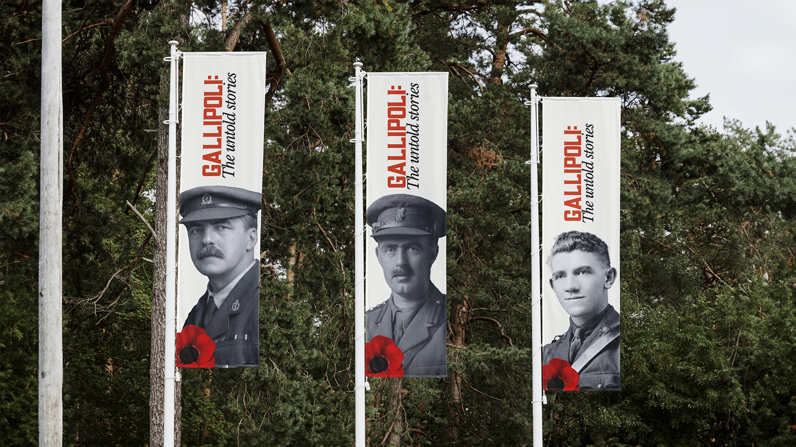
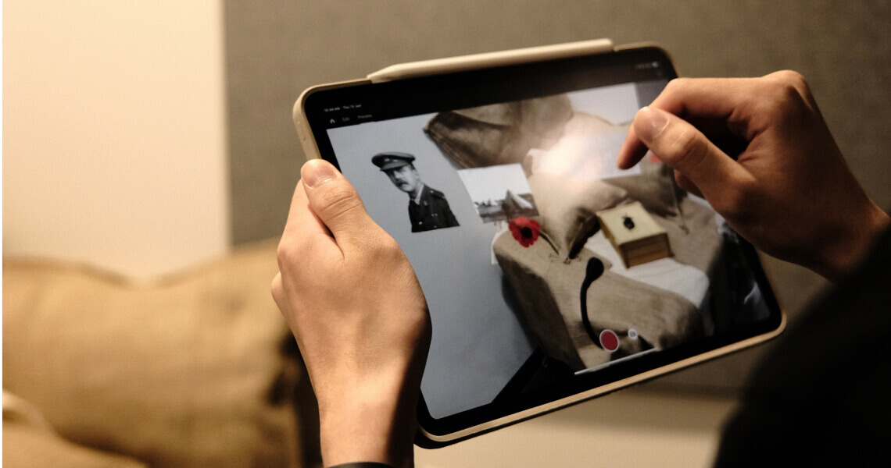
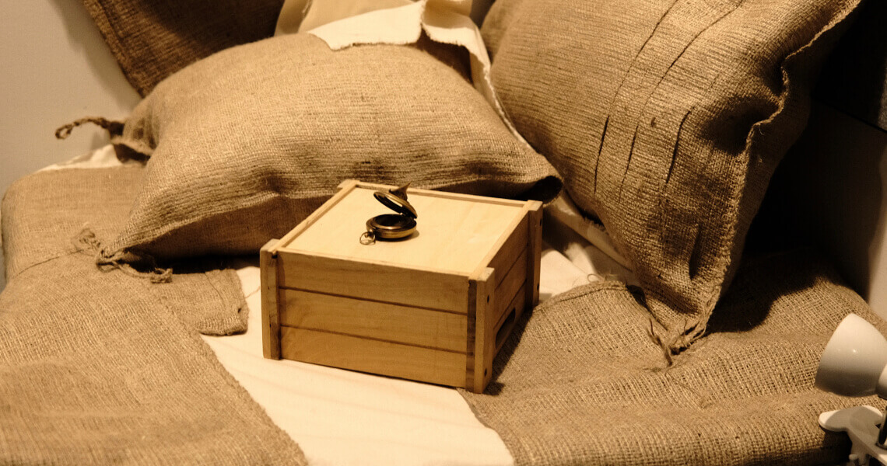
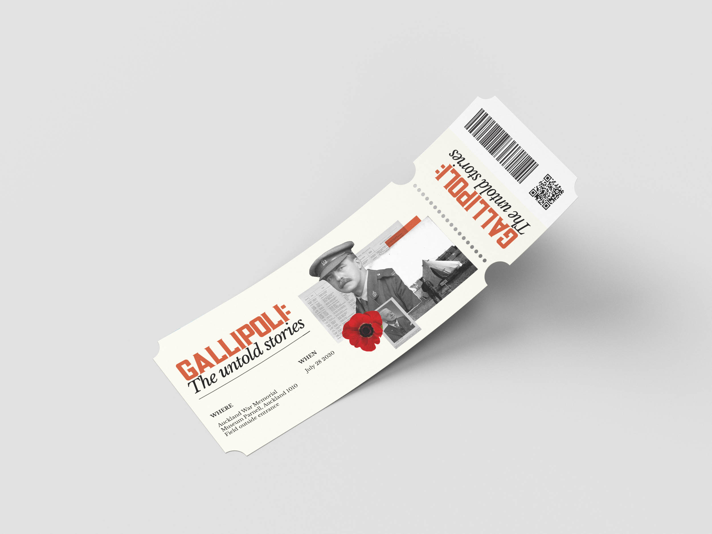
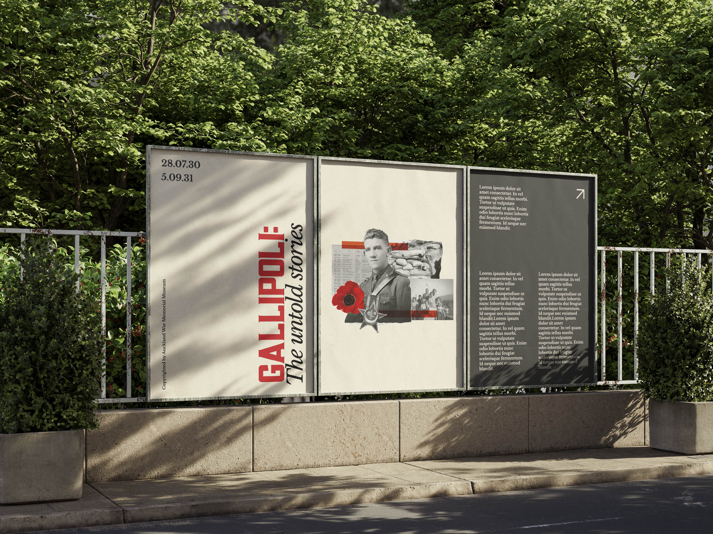

Auckland Museum, MDS
Branding
Graphic
Gallipoli: The Untold Stories is an immersive AR experience at the Auckland Museum, where visitors can step into the lives of the soldiers who fought and fell in Gallipoli. Through everyday items like a soldier's compass or a cherished family photo, these stories are brought to life, sharing the small details that reveal the humanity of these brave individuals. For this project, I collaborated with Jacky Lin, Hannah Smith, and Rachel Berridge to create an experience that honors their memories.
My role was focused on branding. I wanted to keep the design simple and respectful to capture the solemnity of their sacrifice. I chose a subtle colour palette, using a faded cream to evoke an old, weathered feel, alongside a vibrant poppy red—a symbol of the ANZACs. The branding also incorporates a collage style, highlighting the personal items visitors will see throughout the experience, helping to build a connection to the soldiers' everyday lives.




